7
Referências
Este documento foi escrito com o objetivo de permitir a
absorção do sistema SISCOT por novos integrantes da
equipe ou interessados em geral em seus aspectos técnicos. Como
tal, este documento está dividido em 3 partes:
Fundamentação Teórica, Informações
Gerais do Sistema e Processos do Sistema.
Para os interessados nos aspectos teóricos que embasam o
presente trabalho, recomenda-se a leitura da seção
Fundamentação Teórica. A seção
Informções Gerais do Sistema, foi escrita para quem
necessita de entender os vários componentes do sistema e como
fazer a sua instalação.
Caso seja um usuario que necessita de utilizar o sistema,
encontrará a ajuda necessária na seção
Processos.
(Voltar Topo)
O projeto visa a criação de um sistema de
informação para mobilidade urbana, capaz de interligar
subsistemas distintos como centrais de controle de tráfego,
sistemas de consulta via Internet, e centrais de gerência de
estacionamentos, provendo informação em tempo real aos
usuários. O objetivo do projeto é o controle ótimo
dos semáforos, com redução do consumo de
combustível e dos atrasos de viagens em vias urbanas.Espera-se
com este projeto a melhoria da qualidade de vida dos usuários, a
quebra de reservas de mercado devidas a protocolos de
comunicação proprietários, introduzindo a
competição no setor, e a expansão futura para
abarcar os vários aspectos envolvidos na mobilidade urbana,
facilitada pela arquitetura padronizada de software.
Um autômato celular é um conjunto de autômatos
identicamente programados que interagem entre si. No autômato
celular, cada autômato é uma célula. Podemos
construir autômatos celulares com uma ou mais dimensões.
Um autômato celular 1D é um autômato celular que
possui uma seqüência infinita de autômatos justapostos
em linha. Um autômato celular 2D é composto por
autômatos postos lado a lado formando um plano. A mesma abordagem
pode ser usada para autômatos celulares de maior
dimensionalidade.
Os autômatos celulares são usados com sucesso no estudo e
simulação de sistemas dinâmicos complexos.
(Voltar Topo)
O modelo de Nagel-Schreckenberg é baseado em um autômato
celular, o qual divide um trecho qualquer
de uma via em partes elementares de comprimento fixo (células) e
executa simulações em
passos discretos de tempo (iterações). Neste modelo, cada
veículo possui uma velocidade v e
se movimenta de acordo com relações bastante simples,
envolvendo principalmente a sua velocidade
e a posição relativa entre os carros (gap). O modelo
utilizado no SISCOT é baseado no
autômato de Nagel-Schreckenberg, com algumas extensões ao
modelo original.
(Voltar Topo)
Para que se rode uma simulação é necessario
montar, um cenário de simulação. Um cenário
de simulação é uma representação dos
elementos topológicos estáticos (ruas, cruzamentos, vias,
faixas, etc) e dinâmicos (semáforos) existentes no mundo
real. Os objetos representativos
são descritos a seguir:
Este objeto representa a rede ou malha viária. Nele estao
contidos todos os objetos representativos dos elementos
topológicos estáticos e dinâmicos.
Para cada network é associada um conjunto de variaveis
topológicas gerais, tais como, por exemplo, o tamanho da
célula, tempo de ciclo da simulação, o sistema de
tráfego e tamanho da célula.
(Voltar Topo)
Este objeto é espacialmente referenciado, ou seja, contêm
coordenadas x e y segundo determinada projeção. Este
representa um cruzamento servindo como ponto de conexão entre os
objetos do tipo
Streets. Este objeto
representa, tambem,
os pontos da extremidade do cenário onde ficam localizados os
objetos do tipo
Source e
Sink.
(Voltar Topo)
Estes objetos representam os logradouros, as quadras dos logradouros,
as vias de circulação nas quadras e as faixas de rodagem
das vias respectivamente.
Cada street(logradouro) está associada a um conjunto de
Sections(quadras). Uma Section possui um conjunto de Lanesets(vias),
que por sua vez contêm um conjunto de Lanes(faixas)
(Voltar Topo)
Estes objetos representam os semáforos e os Planos
Semafóricos (Semaforic Plan) contidos nesses semáforos.
Um plano semafórico é constituido por diversas "Fases"
(Phases). Cada Fase tem um tempo de inicio e um de fim, e o conjunto
caminhos
que podem ser transitados por veiculos nesse intervalo de tempo. Esses
caminhos são representados por um conjunto de pares de lanes,
a Lane de partida (Lane From) e a Lane de chegada (Lane To).
(Voltar Topo)
Este objeto permite a inserção de veiculos na Network. A
sua função é inserir veiculos numa determinada
Laneset.
Existem 4 formas de inserção de veiculos:
-
Probabilidade Constante: Em cada
n tempos de
ciclos é inserido
x veiculos com probabilidade
p
-
Probabilidade Variável: Em pré-determinados
tempos de ciclos é inserido
x veiculos com
probabilidade
p
-
Fluxo Constante: Em cada
n tempos de ciclos
é inserido
x veiculos
-
Fluxo Variável: Em pré-determinados tempos de
ciclos é inserido
x veiculos
(Voltar Topo)
Este objeto permite a remoção de veiculos na Network. A
sua função é remover todos os veiculos da laneset
a que está conectada.
(Voltar Topo)
Este objeto permite descrever as possibilidades de um veiculo mudar de
direção, de uma lane para uma laneset, num determinado
node.
(Voltar Topo)
Este objeto permite descrever as probabilidades de um veiculo mudar em
cada umas das direções possiveis. Essa probabilidade
é descrita de uma laneset de origem (From) para uma laneset de
chegada (To), num determinado node.
A soma total das probabilidades é igual a 1.
(Voltar Topo)
O sistema foi desenhado para rodar no Sistema Operacional Linux
| Elemento |
Tecnologia |
Servidor
Máquinas lab 214, informatica, UFRGS |
| Páginas dinâmicas |
PHP v.4.3.2 |
einstein |
| Banco de Dados |
PostgreSQL v.7.4.3 |
einstein |
| Servidor Web |
Apache v.1.3.27 |
einstein |
| Simulador |
C++ |
einstein |
(Voltar Topo)
SISCOT-Aplicação
[raiz] -- atualmente é /home/einstein/public/siscot/public_html
|-networks: repositorio de arquivos .topo
usados no applet de visualização da network
SISCOT-Página
[raiz] -- atualmente é
/home/coruja/mas/public_html/traffic/siscot
|-applet visual: Arquivos .class e .java usados
no applet de visualização da simulacao das networks "Av.
da Independencia" e "Square"
|-indco: Diretorio dos
arquivos necessarios para a visualização da simulacao da
network "Av. da Independencia"
|-square: Diretorio dos
arquivos necessarios para a visualização da simulacao da
network "Square"
(Voltar Topo)
- administraSiscot.php: Faz a inserção
(Insert) dos dados digitados, pelo usuário, no banco de dados
- agente.php: Permite que o usuário entre com os
dados, referentes aos Agentes, no sistema
- ajuda.php: Gerência o assistente de
Criação de Cenário de Simulação
- atualiza_calibration.php: Permite que o usuário
faça a atualização dos calibrations Source e Sink
- atualiza_senha.php: Faz a atualização dos
dados de cadastro do usuário, no banco de dados
- cadastro.php: Permite que o usuário entre com os
dados de cadastro, como usuário e senha
- cadastro_usuario.php: Faz a inserção dos
dados de cadastro do usuário, no banco de dados
- coloca.php: Permite que o usuário entre com os
dados, referentes aos Calibration Source, no sistema
- conecta_pg.php: Faz a conexão ao banco de dados.
Contêm as informações da senha e usuário do
banco de dados. Este arquivo é incluido em todos os arquivos que
necessitam de acesso ao banco de dados
- criaPlanosOffset.php: Permite criar planos semaforicos
semelhantes com o tempo de offset embutido no tempo de das fases desses
planos
- dePara.php: Permite que o usuário entre com os
dados, referentes aos Turning Possibilities, no sistema
- escolheNetworkUsuario.php: Permite que o usuário
escolha a Network de trabalho, referentes aos Agentes, no sistema
- estrada.php: Permite que o usuário entre com os
dados, referentes às Streets, no sistema
- faixa.php: Permite que o usuário entre com os
dados, referentes às Lanes, no sistema
- fase.php: Permite que o usuário entre com os
dados, referentes às Fases de um Plano Semafórico, no
sistema
- login.php: Permite que o usuário faça o
Login, no sistema
- logout.php: Permite que o usuário faça o
Logout, no sistema
- modificaSiscot.php: Faz a atualização
(Update e Delete) dos dados, no banco de dados. Semelhante ao
administraSiscot
- modificaTopologia.php: Permite que o usuário
faça modificações da Topology Settings, no banco
de dados
- no.php: Permite que o usuário entre com os dados,
referentes aos Nodes, no sistema
- ordenaLanes.inc: Faz a ordenação das
posições das Lanes de uma Laneset, após ter sido
apagada uma Lane dessa Laneset
- ordenaPlanosSemaforicos.inc: Faz a
ordenação dos Planos Semafóricos, após ter
sido apagado um Plano Semafórico
- peso.php: Permite que o usuário entre com os
dados, referentes aos Turning Probability, no sistema
- planoscoordenados.php: Permite que o usuário
faça a escolha dos planos semafóricos, pertencentes a um
Plano Coordenado
- planosemaforo.php: Permite que o usuário entre com
os dados, referentes aos Planos Semafóricos, no sistema
- rede.php: Permite que o usuário entre com os
dados, referentes à Network, no sistema
- retira.php: Permite que o usuário entre com os
dados, referentes aos Calibration Sinks, no sistema
- seccao.php: Permite que o usuário entre com os
dados, referentes às Sections, no sistema
- semaforo.php: Permite que o usuário escolha o Node
para criação dos Planos Semafóricos
- topologia.php: Permite que o usuário entre com os
dados, referentes à Topology Settings, no sistema
- valida_sessao.inc: Permite que o controle de
sessão do usuário no sistema. Nenhum usuario pode acessar
ao sistema através da url sem primeiro ter feito login.
- veiculo.php: Permite que o usuário entre com os
dados, referentes aos Veiculos, no sistema
- via.php: Permite que o usuário entre com os dados,
referentes aos Lanesets, no sistema
- Arquivos HTML:index.html; cabecalho&menu_completo;
cabecalho&menu_estatico; cabecalho&menu_logout;
cabecalho&menu_new_logout; cabecalho&menu_new_view_help_logout;
cabecalho&menu_new_view_logout.
São os responsáveis pela criação do menu
à esquerda da interface, em todos os estágios em que
aparece. Os nome após "&" significa as opcoes de menu
visivéis.
(Voltar Topo)
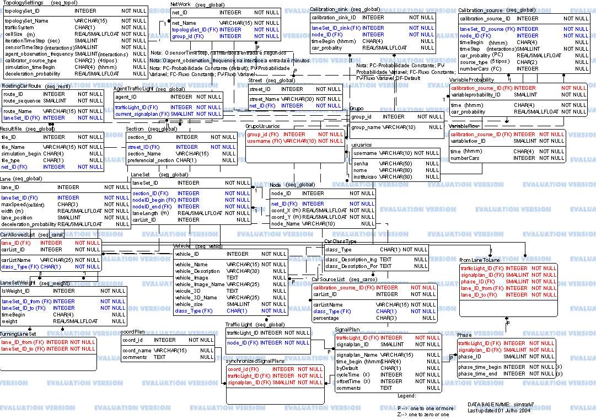
(Voltar Topo)
O simulador após cada interação pode gerar, para a
tela ou para um arquivo, um ou mais informacoes
estatísticas,dependendo da necessidade do usuário. Estas
informações estatísticas, passiveis de serem
geradas, estão organizadas em 3 tipos de formatos, com dados
específicos em cada um deles:
Formato: "Lane.txt"
- time
- lane
- current density
- current average speed
- array of cells ("-" or "carId")
time
|
lane
|
density
|
average speed
|
array of cells
|
1
|
1
|
0.3
|
2.5
|
- - 1 - - 2 13 5 7 -
|
1
|
2
|
0.25
|
2.333
|
- 12 22 - 12 - - -
|
1
|
3
|
0.3
|
2
|
4 - - 5 - - - 9 8 -
|
...
|
...
|
...
|
...
|
...
|
1
|
n
|
0
|
0
|
- - - - - - - - - -
|
2
|
1
|
0.3
|
3
|
- - - - - 1 - - - -
|
...
|
...
|
...
|
...
|
...
|
2
|
n
|
0
|
0
|
- - - - - - - - - -
|
...
|
...
|
...
|
...
|
...
|
Formato: "Node.txt"
- time
- Node
- current Signal Plan
Obs.: just save when the Signal Plan changes.
time
|
node
|
Signal Plan
|
1
|
1
|
sp1_1
|
1
|
2
|
sp2_1
|
1
|
3
|
sp3_1
|
...
|
...
|
...
|
1
|
n
|
spn_1
|
2
|
1
|
sp1_2
|
2
|
5
|
sp5_2
|
...
|
...
|
...
|
n
|
3
|
sp3_n
|
Formato: "SpecialCar.txt"
- time
- car
- current lane
- current position
- current speed
- driver identifier
time
|
car
|
lane
|
position
|
speed
|
driver id
|
next lane
|
next speed
|
1
|
1
|
3
|
7
|
3
|
0
|
3
|
3
|
1
|
2
|
3
|
4
|
2
|
1
|
3
|
3
|
1
|
3
|
4
|
10
|
3
|
0
|
7
|
3
|
...
|
...
|
...
|
...
|
...
|
...
|
...
|
...
|
1
|
n
|
2
|
1
|
1
|
1
|
2
|
2
|
2
|
1
|
3
|
10
|
3
|
0
|
4
|
3
|
2
|
2
|
3
|
6
|
3
|
0
|
3
|
3
|
...
|
...
|
...
|
...
|
...
|
...
|
...
|
...
|
2
|
n
|
2
|
3
|
2
|
1
|
3
|
3
|
...
|
...
|
...
|
...
|
...
|
...
|
...
|
...
|
(Voltar Topo)
Atualmente o sistema de visualização do Projeto SISCOT
é baseada em JAVA, num aplicativo multiplataforma simples de se
utilizar, utilizando como entrada os arquivos gerados na
saída do simulador. A
visualização pode ser feita de duas formas: pela cor
correspondente a taxa de ocupação das vias ou pelos
veículos trafegando nas mesmas.
As opções de controle da visualização
atualmente incluem:
-iniciar, para começar a mostrar
um resultado da simulação já carregado;
-pausar, permitindo uma melhor
análise da simulação;
-continuar, reiniciando a
visualização após uma
pausa;
-parar, interrompe a
visualização e permite reiniciar.
Existem ainda controles para o nível de zoom do mapa e para
deslocamentos, uma vez que a área de desenho é limitada.
Pode-se usar deslocamentos grandes (representados pela duplicidade) ou
deslocamentos pequenos.
Visualização Colorida pela Taxa de
Ocupação
Cada via muda sua cor, conforme a taxa de ocupação que
possui.
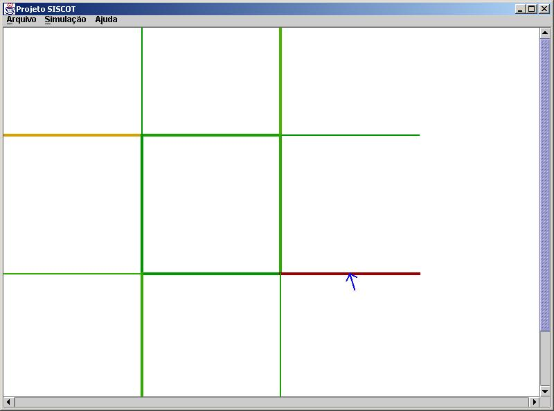
O programa possui uma legenda para facilitar a compreensão do
mapa, vista abaixo:
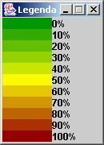
Visualização de Veículos
O Sistema Visual também permite visualizar os veículos a
cada passo de simulação. Assim, podemos observar o
comportamento dos veículos, além de outras
características, como a presença de filas.
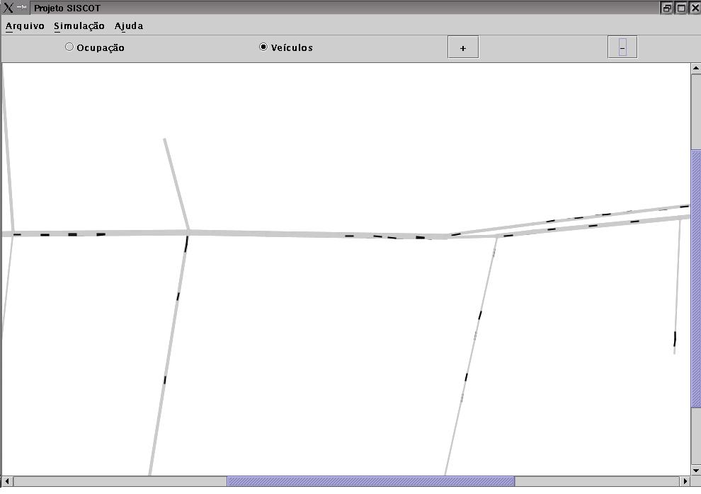
Consultas
Um mecanismo de consulta está implementado, onde é
possível obtermos um rápido acesso a algumas
informações sobre determinada via, como a taxa de
ocupação, quantidade de veículos, velocidade da
via, etc.. Uma amostra de sua aparência pode ser vista abaixo:
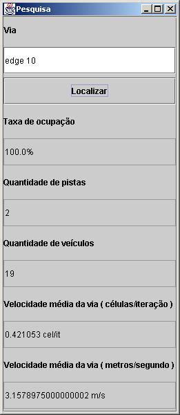
Quando um nome incorreto for digitado, uma janela exibirá
todas as possibilidades de nomes de edges existentes para selecionares
um:
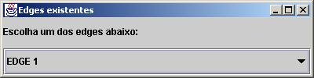
Instalação do PostgreSQL
Aqui pretende-se apresentar de uma forma suscinta a
instalação do banco de dados Postgresql. Para mais
informações e download do banco de dados, visite a
página oficial do
Postgresql.
Executar o shell com o usuario postgres, o superusuario do PostgreSQL.
Para isto, entre com o seguinte comando no xterm: su - postgres
Executar o comando initdb: initdb -W -D /usr/local/pgsql/data/ &
O initdb é um Script Shell e a sua execucao deve acontecer
somente na primeira vez em que se instalar o Postgresql. Ele é
responsável por acertar determinadas variáveis de
ambiente para o Postgresql (como o diretorio padrao em que residerao
seus bancos de dados elaborados em Postgresql), copiar arquivos de
configuracao, criar visoes uteis ao catalogo do Postgresql, entre
outras funcoes.
Iniciar o Postgresql: /usr/bin/postmaster -i -D /usr/local/pgsql/data/
Instalação do banco de dados Siscot
Pegar a ultima versao (tabelas + dados) do banco de dados do projeto:
Tabelas: pg_dump --disable-triggers --no-owner --schema-only
--no-privileges --file=backup.sql siscot (nome da última
versão)
Dados: pg_dump --disable-triggers --no-owner --data-only
--format c --file=backup.dat siscot(nome da última versão)
Criar o banco de dados siscot:
psql -c "CREATE DATABASE simtrafv7 WITH ENCODING='Latin1'"
Criar um usuario para a utilizacao do banco de dados:
CREATE USER nomeUsuario PASSWORD 'senhaUsuario';
GRANT ALL PRIVILEGES ON simtraf TO nomeUsuario;
Mudar para o usuario criado: su - nomeUsuario
Carregar o banco de dados:
Tabelas: psql -c "\i backup.sql" siscot
Dados: pg_restore --disable-triggers --dbname=siscot backup.dat
Para sair do BD: pg_ctl stop -D /usr/local/pgsql/data/
(Voltar Topo)
Configuração do Servidor Apache
Depois de instalado, é necessário fazer a
configuração do servidor, através do arquivo
httpd.conf. Normalmente se encontra em etc/httpd/ .
Todas as configurações estão comentadas. O
mínimo que deve ser configurado é o diretório onde
os documentos (arquivos da interface) deveram estar, através da
opção DocumentRoot. Basta procurar a opção
e escrever o nome do diretório em seguida, como no exemplo:
DocumentRoot "home/diretorioPHP/public_html"
e tambem
<Directory "home/diretorioPHP/public_html">
....
</Directory>
Uma outra configuração básica é a
DirectoryIndex, que informa ao servidor quais os arquivos serão
exibidos automaticamente como índice do diretório.
É isso que faz com que ao digitar, por
exemplo,“www.guia-aju.com.br, o servidor saiba qual dos arquivos do
diretório deve ser exibido. Abaixo temos um exemplo da
utilização do DirectoryIndex:
DirectoryIndex index.html index.htm index.php
Feito isso, crie um arquivo com um dos nomes definidos como
índice e coloque no diretório definido como root. Execute
o servidor Apache e tente acessar o endereço “http://localhost”
pelo browser. Se a página for exibida, é porque o
servidor foi instalado e está funcionando corretamente.
Configuração do PHP
Faça download e leia as informações sobre
instalação do PHP. Para tal, visite a página
oficial do
PHP.
Depois de instalado o PHP, o arquivo, com o nome php.ini (normalmente
se encontra em usr/local/etc) deverá ser editado, e dai
modificar a linha extension_dir, que deve conter o diretório
onde estão os módulos (arquivos dll). Veja o exemplo:
extension_dir= /php/extensions
Além disso é necessário descomentar a linha
referente o módulo postgres, já que iremos
utilizá-lo basta tirar o “;” (ponto-e-vírgula) do
início da linha:
;extension=php_pgsql.dll
Modificar o root das páginas PHP:
doc_root="home/diretorioPHP/public_html" -->Nota:deverá ser
igual ao DocumentRoot do Apache
e colocar os registos globais em on, para que se possa utilizar as
variaveis dos formulários:
register_globals=On (inicialmente estao Off para maior segurança)
Feito isso, podemos partir para a configuração do
servidor Apache, necessária para que este reconheça o
PHP. Editando novamente o arquivo httpd.conf, a linha a seguir deve ser
descomentada ou criada no arquivo:
AddType application/x-httpd-php4 .php4 .php
Além disso devem ser acrescentadas as seguintes linhas:
LoadModule php4_module c:/php/sapi/php4apache.dll
AddModule mod_php4.c
A primeira linha define o diretório onde está o PHP. A
segunda cria um “tipo” para o PHP, definido que todos os arquivos com
as extensões “.php4” e “.php” devem passar pelo interpretador
PHP. A terceira linha define o executável do interpretador PHP.
Depois de salvar o arquivo, podemos testar se a
instalação do PHP foi bem sucedida. A melhor maneira
é criar um arquivo chamado teste.php e salvar no
diretório raiz do servidor Apache. O arquivo deve conter a
seguinte informação:
<?
phpinfo();
?>
Acessando a página através do servidor
(http://localhost/diretorioPHP/teste.php), devemos ter como resultado
uma listagem de todas as configurações do PHP, incluindo
o módulo postgres, que foi definido como ativo no arquivo
php.ini.
Configuração da Interface
Colocar todos os arquivos da interface no DocumentRoot
("home/diretorioPHP/public_html") configurado tanto no Apache como no
PHP
Criar diretorio networks (com permisao de gravacao) em
home/diretorioPHP/public_html/
No arquivo
conecta_pg.inc fazer as alteracoes respectivas, com
o nome do seu servidor, o nome do banco de dados,...etc, das seguintes
linhas:
$str_conexao="host=nomeServidor dbname=nomeDB port=5432
user=nomeUsuario password=senhaUsuario";
$tamanho_tela="percentagemTamanhoTela%";
(Voltar Topo)
(Voltar Topo)
Para voce poder criar o seu cenário de simulação
é necessario, primeiro, fazer um cadastro de usuario. Com isso,
voce poderá criar, salvar e editar o seu cenário
além de outros cenários já existentes de dominio
publico. Para tal, siga os passos abaixo:
-Click em "Create New User" (ver Fig. abaixo)
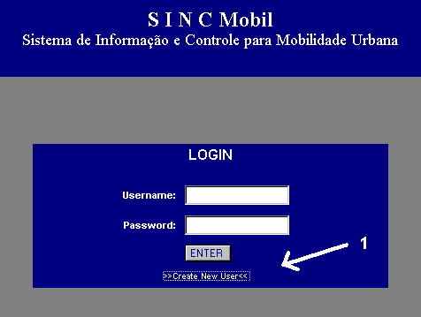
-Preencher os campos do Formulario (ver Fig. abaixo)
Nota: Para poder acessar os cenarios do grupo Siscot, por favor
contatar o
grupo Siscot.
(Voltar Topo)
Antes de criar ou editar um cenário de simulação
é necessario fazer o login no sistema. Para tal, entre com o seu
usuario e senha, cadastrado previamente:
-Preencher os campos com o usuario (1) e senha (2) (ver Fig. abaixo)
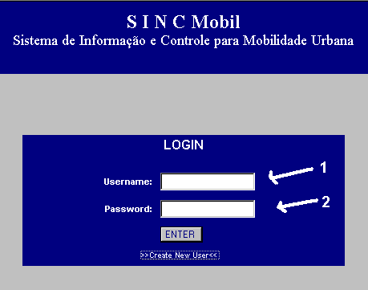
(Voltar Topo)
Para sair do sistema, e encerrar a sua sessao de trabalho sobre o seu
cenário de simulação, clicar em Logout, situado no
menu da esquerda:
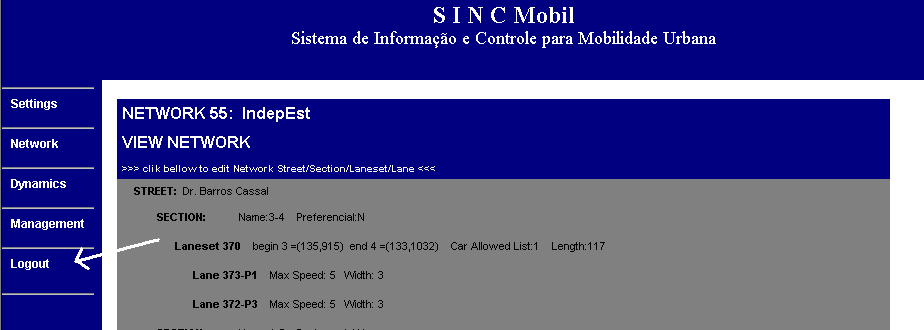
Nota: A cada operacao (inserir/apagar/editar) realizada no seu
cenário de simulação e feita uma
atualização do banco de dados, ou seja, o seu trabalho
é salvo automaticamente a cada operação efetuada.
(Voltar Topo)
Após a entrada correta no sistema de usuario e senha,
aparecerá uma tela com as opcoes para voce poder criar
uma cenario de simulação novo ou editar um cenário
já existente.
-Para criar novo cenário clicar em ***New Network***(ver Fig.
abaixo)
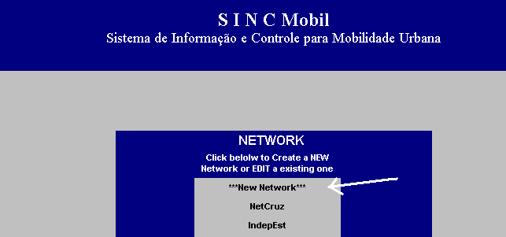
-Seguir os passos de 1 a 10 do assitente de criação de
cenários(ver Fig. abaixo). Para tal, basta clicar em cima de
cada passo respectivamente
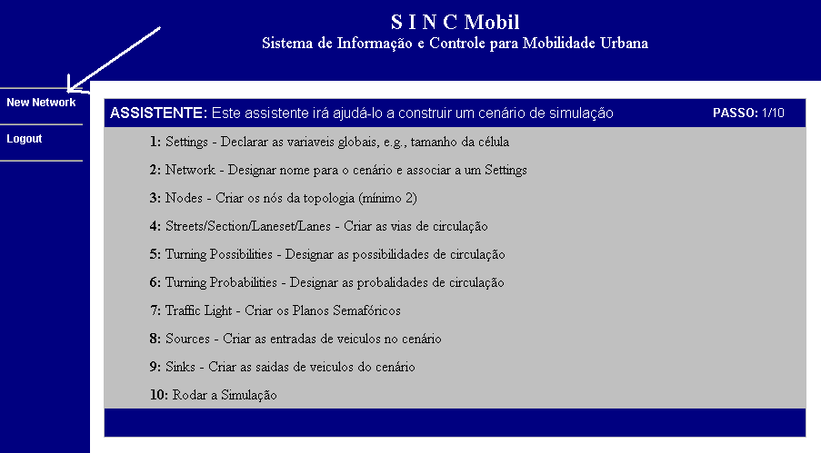
-Para sair do assistente e construir o cenario sem a ajuda clicar em
***New Network***(ver Fig. acima) e depois clicar no seu cenário
Nota1: O processo de criacao de um cenário de
simulação é sequencial. Como tal, recomenda-se a
utilização do assistente de criação.
Nota2: No canto superior direito (ver Fig. acima) encontra-se um
indicador de qual o passo que vc se encontra, do total de 10
necessarios para rodar uma simulação.
(Voltar Topo)
-Para criar um Node, a partir do menu da esquerda, clicar em
Network->Nodes->New(ver Fig. abaixo)
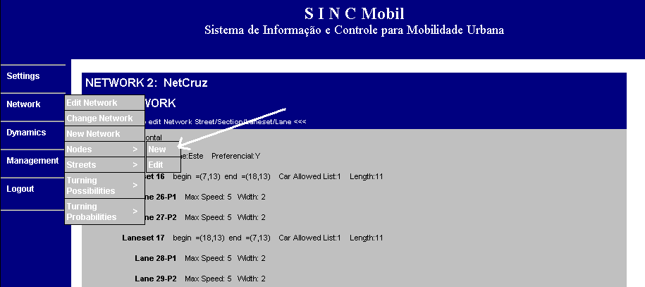
-Preencher o campo (1) com nome do Node, que é um campo
opcional, e que por default é um numero sequencial
correspondente ao número de Nodes existentes.
-Preencher os campos (2) e (3) com as coordenadas X e Y,
respectivamente, referentes à posicao espacial do Node.
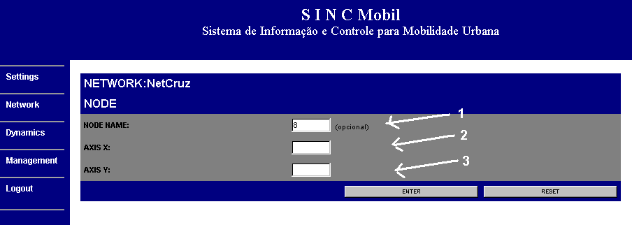
(Voltar Topo)
-Para criar uma Street na Network, a partir do menu da esquerda, clicar
em Network->Street->New (ver Fig. abaixo).
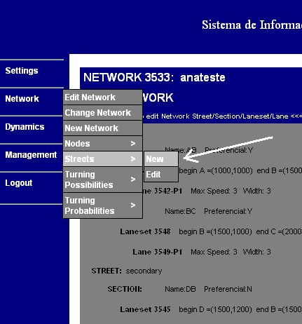
-Preencher o campo com o nome da Street (ver Fig. abaixo).
Nota1: As partes constituintes de uma via de circulacao tem uma relacao
de interdependencia (1 contêm n) ou seja, nao é possivel,
por exemplo, criar uma Lane sem ter-se criado previamente uma laneset,
e assim tambem em relacao a Section e Street.
Nota2: Após a entrada de uma Street, Section ou Laneset, no
sistema, aparecerá sempre a opção de criar uma
Section, uma Laneset ou uma Lane respectivamente, ou seja, de um
elemento que pode estar contido no elemento novo criado.
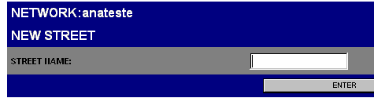
-Para acrescentar vias de circulação, a partir do menu da
esquerda, clicar em Network->Edit Network (ver Fig. abaixo).
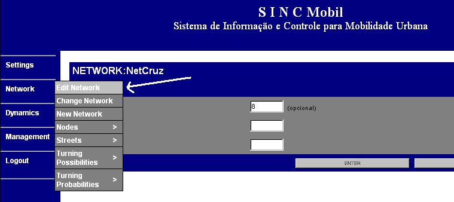
-Na tela irá aparecer a estrutura da presente Network. Para
editar uma Street, Section, Laneset ou uma Lane, clicar em (1),(2),(3)
e (4) respectivamente (ver Fig. abaixo).
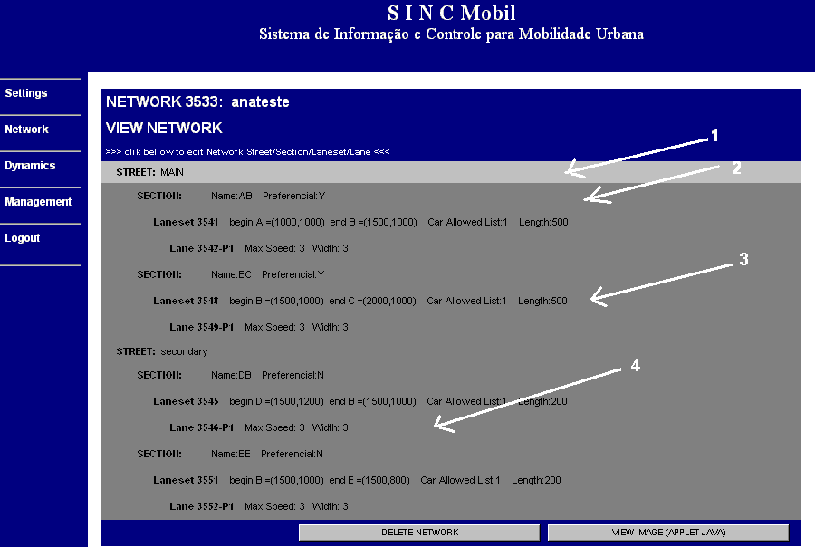
(Voltar Topo)
-Para criar um Plano Semafórico, a partir do menu da esquerda,
clicar em Dynamics->Traffic Lights->New(ver Fig. abaixo)
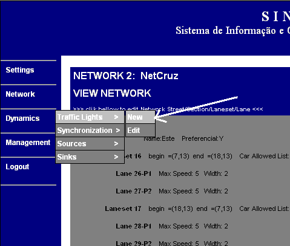
-Selecionar no campo (1) o Node, ao qual vai pertencer o plano
semaforico. Este aparece na forma número ID e as
coordenadas(X,Y) correspondentes, referentes à posicao espacial
do Node. Caso esta caixa de seleção esteja vazia,
significa que nao existe nenhum Node ainda na Network, então
crie um Node primeiro.(ver Fig. abaixo)
-Preencher o campo (2) com nome do Plano Semafórico, que
é um campo opcional.
-Preencher o campo (3) com a hora de início (hh:mm) do plano
semafórico.
-Assinalar no campo (4) se este plano será o plano
semafórico default deste Node.
-Preencher os campos (5) e (6) os tempos de ciclo e offset (opcional),
respectivamente. O tempo de ciclo é o tempo decorrente desde o
início da primeira fase do plano semafórico até ao
fim da ultima fase do plano semafórico. Significa isso que o
tempo final da ultima fase nao pode ultrapassar o tempo de ciclo
estipulado.
O tempo de offset, é o intervalo de tempo entre dois planos
semafóricos coordenados, de forma a se obter o efeito de "onda
verde"
-Preencher o campo (7) com algum comentario que se ache pertinente, em
relação, ao plano semafórico criado.
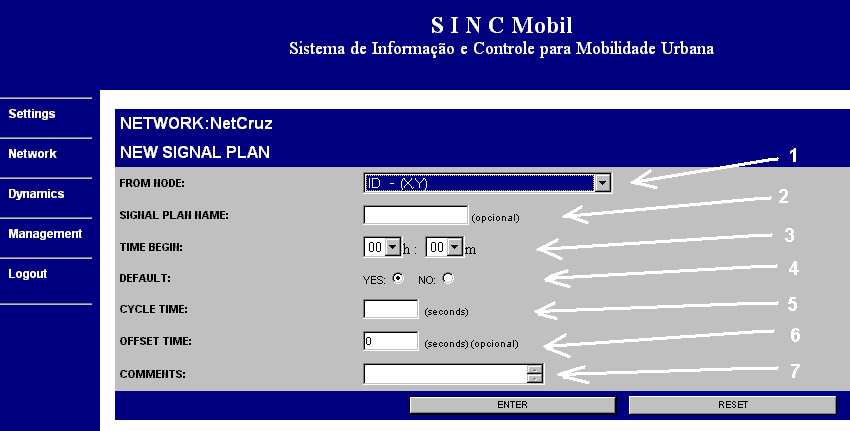
-Após da inclusao no banco de dados de nome, hora de inicio,
tempo de ciclo, tempo de offset, etc, do plano semafórico
criado, chegou a hora de criar as fases do plano semafórico.
-Uma fase de um plano semafórico representa um intervalo de
tempo em que é permitido circular veiculos de um determinado
local(Lanes) para outro (Lanes).
-Para criar uma fase, clicar em (1) "Create Phases" ou em (2) "List
Signal Plan" para listar os planos existentes (ver Fig. abaixo).
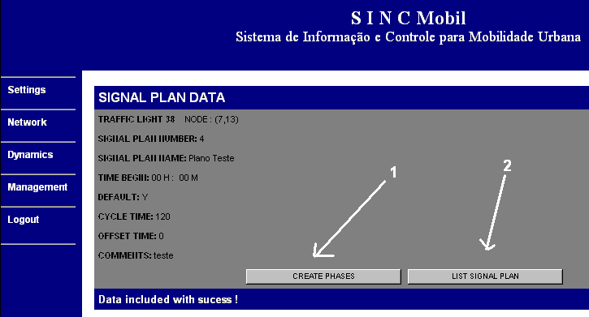
-Preencher o tempo de início e de fim da fase em (1) e (2)
respectivamente (ver Fig. abaixo).
Nota1:A primeira fase começa do tempo 0s.
Nota2:O tempo de fim nao pode ser menor que o tempo de inicio da fase.
Nota3:O tempo de início de uma fase nao pode ser menor que o
tempo de fim da fase anterior.
-Selecionar uma Lane de origem e uma Lane de destino, em (3) e (4),
respectivamente.
Nota1:A caixa de seleção da Lane de origem, a
informação aparece na forma número Node de origem
da Lane e o próprio número da Lane. Caso esta caixa de
seleção esteja vazia, significa que nao existe nenhuma
Lane cujo Node de destino seja o Node o qual vc escolheu para criar o
plano semafórico.
Nota1:A caixa de seleção da Lane de destino, a
informação aparece na forma número da Lane e o
Node de destino dessa Lane. Caso esta caixa de seleção
esteja vazia, significa que nao existe nenhuma Lane cujo Node de origem
seja o Node o qual vc escolheu para criar o plano semafórico.
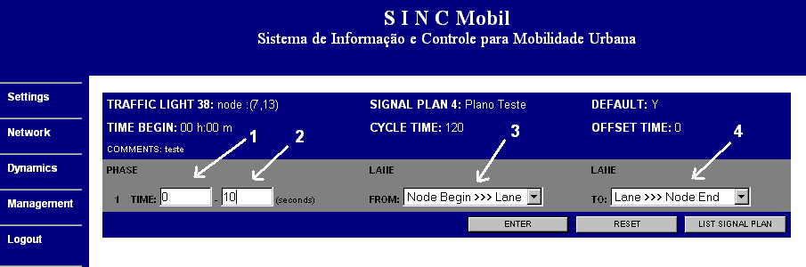
-Após da inclusao no banco de dados de um par de Lanes da fase
criada, irá aparecer as opcoes de criação de um
novo par de Lanes na fase atual (1) "SAME PHASE", uma nova fase (2)
"NEW PHASE", ou novo plano semafórico (3) "NEW SIGNAL PLAN" (ver
Fig. abaixo).
-Repetir o passo acima, até completar a construção
do plano semafórico.
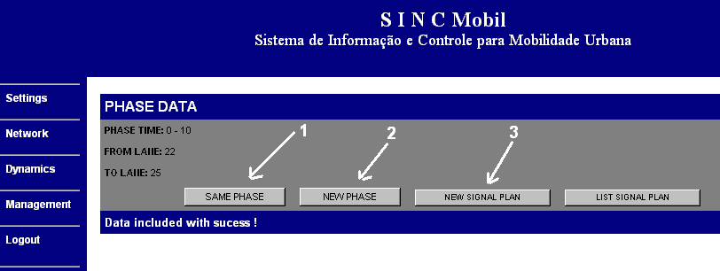
-Nota3: Quando se clica em "LIST SIGNAL PLANS", como o próprio
nome indica, é listado todas as informacoes de todas as fases de
todos os planos semafóricos existentes naquele Node.
-Nota4: Se aparecer em alguma linha a informação "Turning
Not Allowed", significa que foi criado um par de Lanes numa fase que
nao habilitado a circulação de uma Lane para a outra.
Assim, apague esse par de Lanes dessa fase ou possibilite essa
circulação em "Turning Possibility".
-Nota5: Se aparecer a informação "Phases Missing",
significa que foi habilitado a circulação de uma
determinada Lane para a outra, mas nao essa circulação
nao foi comtemplada em nenhuma fase do plano semafórico. Assim,
crie esse par de Lanes numa das fases do plano ou impossibilite essa
circulação em "Turning Possibility".
(Voltar Topo)
-Para criar um lugar de entrada de veiculos no cenário, a partir
do menu da esquerda, clicar em Dynamics->Sources->New (ver Fig.
abaixo)
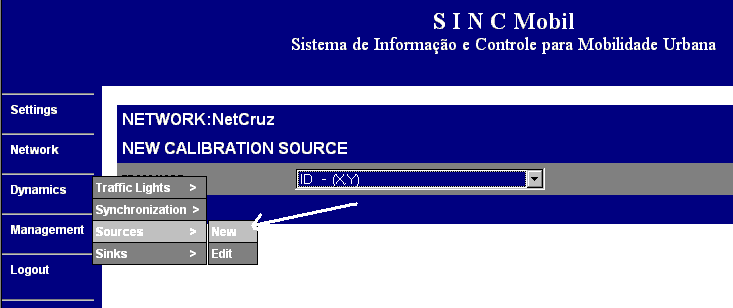
-Selecionar no campo (1) o Node, ao qual vai estar localizado a entrada
de veiculos no cenário. Este aparece na forma número ID e
as coordenadas(X,Y) correspondentes, referentes à posicao
espacial do Node. Caso esta caixa de seleção esteja
vazia, significa que nao existe nenhum Node ainda na Network,
então crie um Node primeiro.(ver Fig. abaixo)
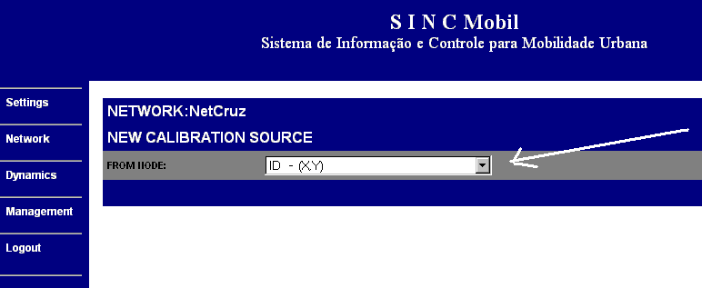
-Após de selecionar o Node no campo (1) preencher o resto da
informação do Source.(ver Fig. abaixo)
-Selecionar em (2) a Laneset de destino para a colocação
de veiculos. As Lanesets da caixa de selecao, sao todas aquelas cujo
Node de origem é aquele escolhido para a
localização do novo Source
-Preencher o campo (3) com a hora de início (hh:mm) do Source.
-Preencher os campos (4) com o tempo de ciclo. O tempo de ciclo
é o tempo decorrente entre a duas interacoes do source.
-Selecionar em (5), o tipo de source. Exitem quatro tipos de sources:
-Constant Probability: Insere veiculos
com probabilidade constante (Vehicles Insertion Rate)
-Variable Probability: Insere veiculos
com probabilidade variavel
-Constant Flow:Insere um número
fixo de veiculos em cada tempo de ciclo
-Variable Flow:Insere um determinado
número de veiculos em cada tempo de ciclo
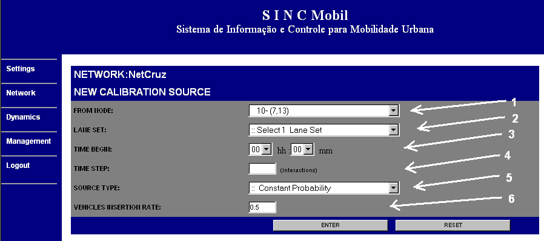
(Voltar Topo)
-Para criar um lugar de entrada de veiculos no cenário, a partir
do menu da esquerda, clicar em Dynamics->Sinks->New (ver Fig.
abaixo)
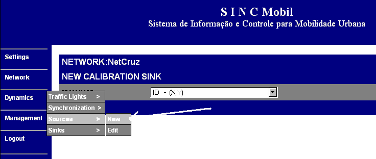
-Selecionar no campo (1) o Node, ao qual vai estar localizado a
saídade veiculos no cenário. Este aparece na forma
número ID e as coordenadas(X,Y) correspondentes, referentes
à posicao espacial do Node. Caso esta caixa de
seleção esteja vazia, significa que nao existe nenhum
Node ainda na Network, então crie um Node primeiro.(ver Fig.
abaixo)
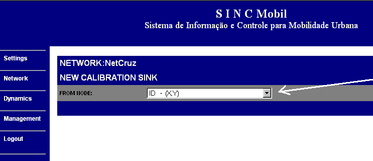
-Após de selecionar o Node no campo (1) preencher o resto da
informação do Source.(ver Fig. abaixo)
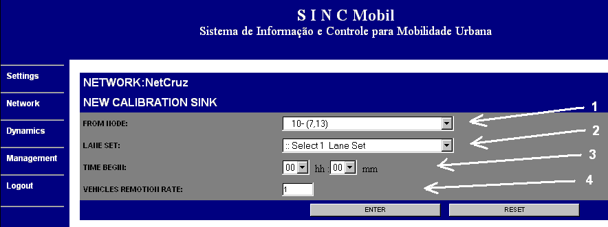
(Voltar Topo)
As tarefas que ainda devem ser realizadas de forma a melhorar o
simulador atual:
-Alteração da velocidade de um carro na saida de um
semáforo para 1
-Retirar as Turning Possibilities
-O tempo de uma fase de um plano semaforico comecar em 1 em vez de 0
-Os Objetos do simulador passarem a ser referenciados por nome e nao
mais pelo seu número
-Criar desaceleração por street/section/laneset/lane de
modo a poder representar de uma forma mais realista, disturbios que
ocorrem na via publica como, por exemplo, obras de manutencao em
determinado trecho dessas vias
(Voltar Topo)
(Voltar Topo)